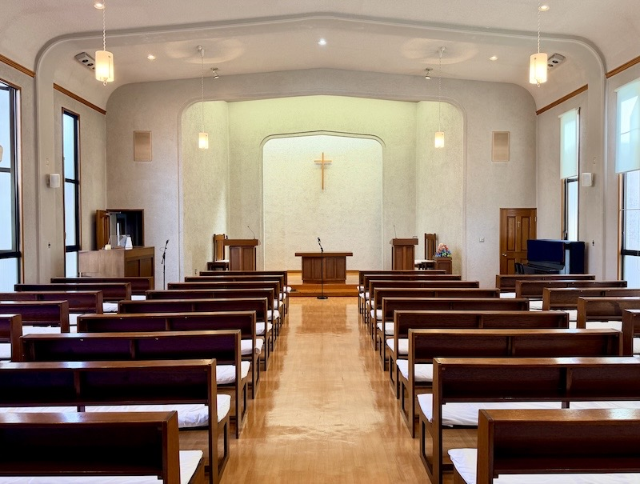
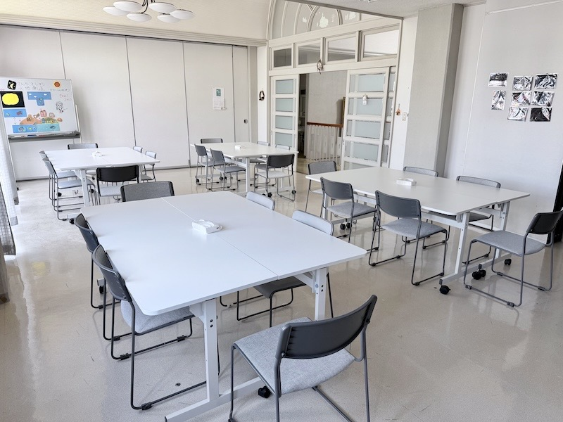
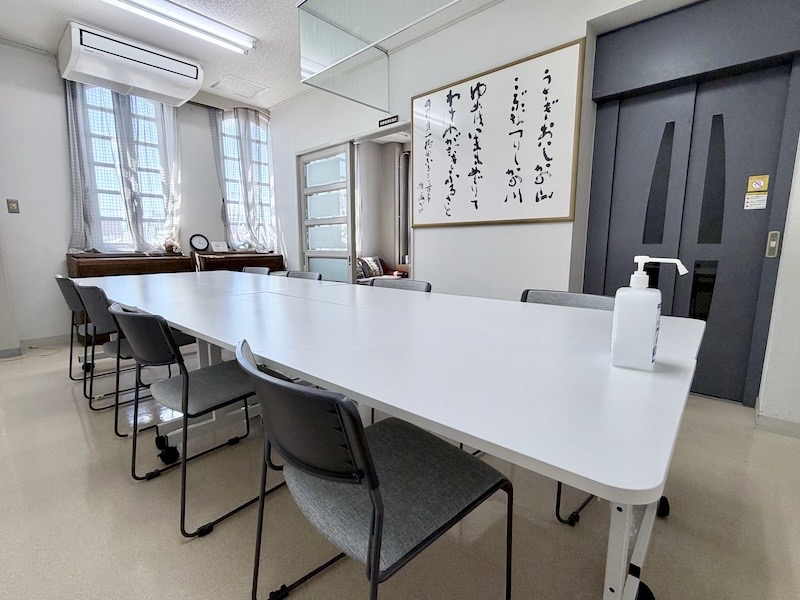
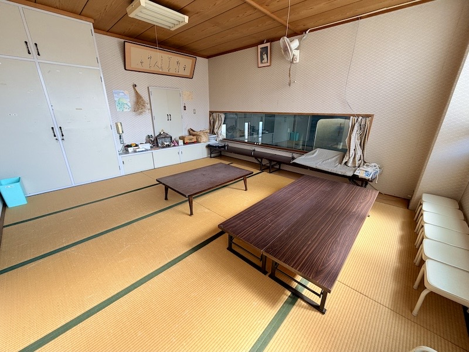
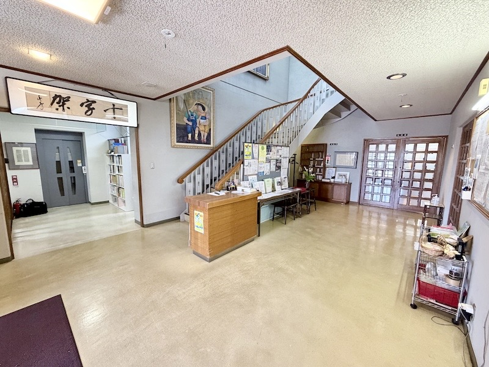
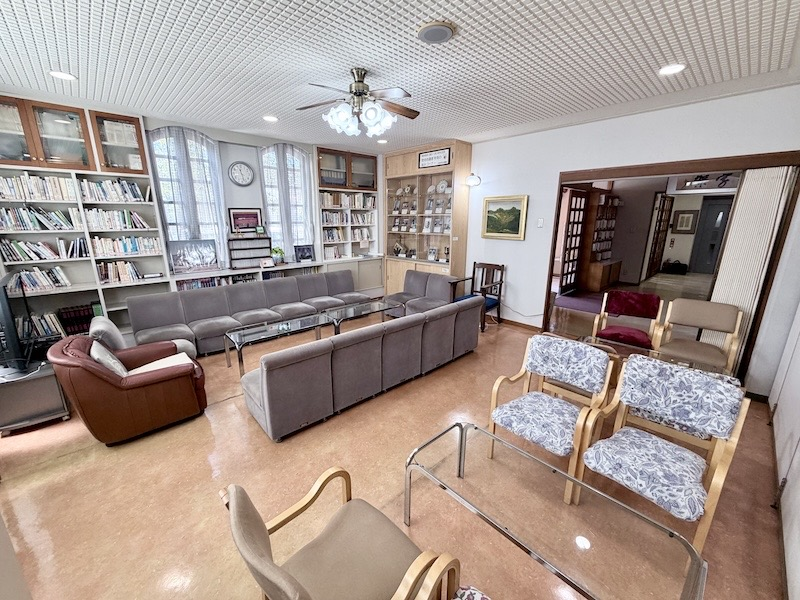
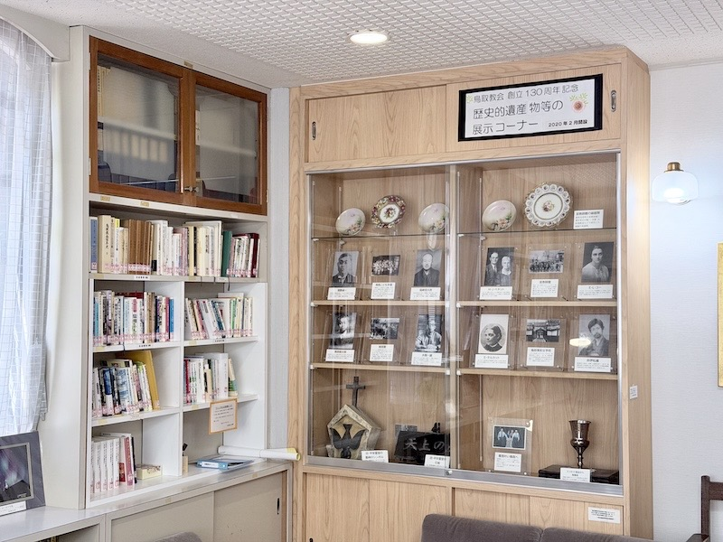
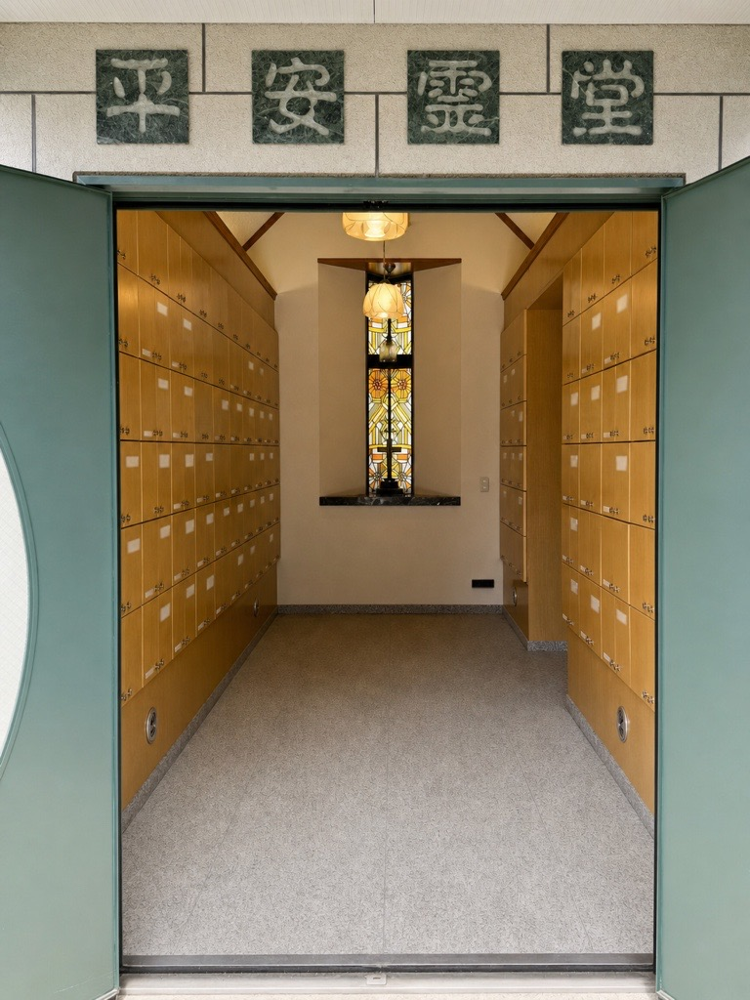
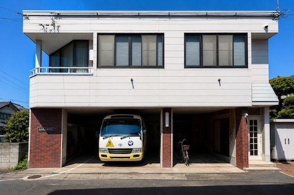

礼拝堂
毎週日曜日に主日礼拝を行う、教会の中心となる場所です。
鳥取教会には、礼拝堂や集会室をはじめ、親子室、ロビー、ラウンジ、教育館、納骨堂、歴史的遺産物等の展示コーナーがあります。それぞれの施設をご紹介します（写真をクリック・タップすると拡大してご覧いただけます）。

毎週日曜日に主日礼拝を行う、教会の中心となる場所です。
定例役員会や諸委員会の会議、さまざまな集会に用いられています。

月に一度のうどんコーナーをはじめ、会議やCS（教会学校）の活動に用いられています。

主にバイブルクラスや聖書に親しむ集いなど、聖書を学び語り合うために用いられています。また、少人数の委員会などにも用いられています。

主日礼拝などの際に、親子がともに礼拝を守るための場所です。

教会の入口にあり、礼拝や集会に訪れる方を迎える空間です。教会からのお知らせや案内をご覧いただけます。

月に一度のコーヒータイムや会議などに用いられる、くつろぎの空間です。

創立130周年を記念して設けられた展示コーナーです。宣教師や信徒たちの写真をはじめ、教会の歩みを伝える歴史的な資料を展示しています。


青年会や中高生たちが主に用いる、学びと交わりのための場所です。
鳥取教会は、地域に開かれた教会として、教会の活動に支障のない範囲で施設をご利用いただけます。ご利用を希望される方は、教会までお問い合わせください。